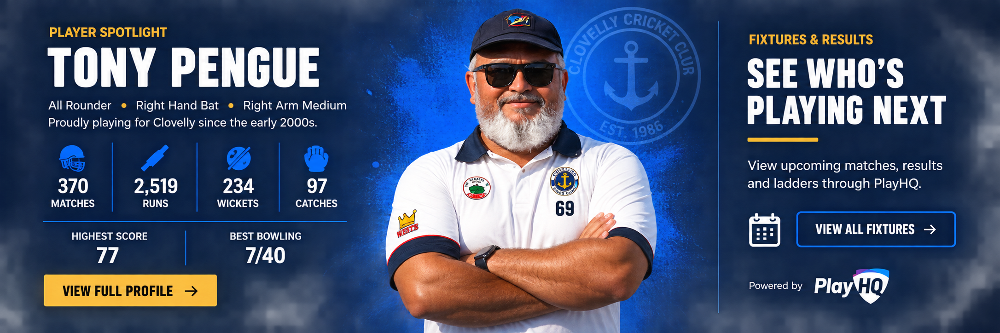

🏏
Play Cricket
Registration, fees and everything you need to get started with Clovelly.
Register now →Clovelly Cricket Club
Local cricket.
Mateship. Community.
Registration, fees and everything you need to get started with Clovelly.
Register now →View upcoming matches, results and ladders through PlayHQ.
View fixtures →Career stats, season leaders and Clovelly club records across batting, bowling and fielding.
View stats →Our history, committee, values and the people who make the Gropers a great club.
About our club →Player Spotlight
Clovelly CC · Career statistics

Our Club
Founded in 1986, the Clovelly Gropers Cricket Club was built on local friendships, community spirit and a strong connection to Clovelly's beach culture. The club brings together players of different ages and abilities in a relaxed, inclusive cricket environment.